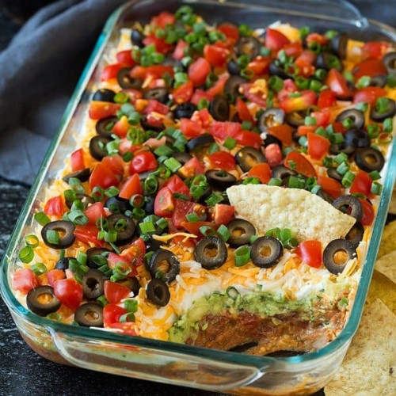
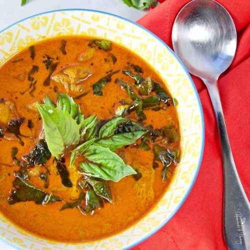
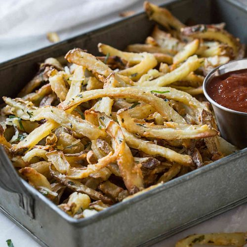
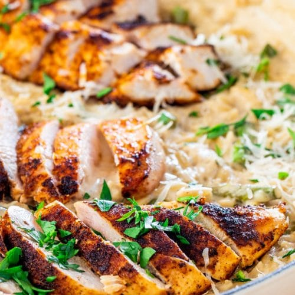

- List of Restaurant
- Porsena | Monday
Italian Restaurant
Just a few blocks from Astor Place, Chef Sara Jenkins draws on memories of her Tuscan and Roman childhood to create a pasta-centric menu. Porsena showcases Italy’s finest artisanal pastas, served with traditional and imaginative sauces, along with a series of tasty antipasti and hearty main courses. Modeled after the simple restaurants in Italy that serve as neighborhood dining rooms, the focus is on timeless classic Italian dishes such as maccheroncini al ragu and spaghetti con le vongole. Porsena is just the kind of colorful neighborhood restaurant you might be thrilled to find in the narrow back streets of Rome or Florence.
- Xi'an Famous Foods | Tuesday
Chinese restaurant
Xi’an Famous Foods began as a 200 square foot basement stall in the Golden Shopping Mall in Flushing, N.Y. The original location, established in late 2005, was the first restaurant to bring the little-known cuisine of Xi’an to the United States, with signature hand-ripped noodles, secret spice mixes, and Xi’an “burgers” with housemade flatbread. Since then, we’ve expanded to multiple locations in Manhattan, Brooklyn and Queens in total. As a family-owned business, we hope to reintroduce the world to the unique cuisine of our hometown: liangpi “cold skin” noodles, lamb pao mo soup, and wide hand-pulled “biang biang” noodles, all in its most authentic form.
 - Tarallucci e Vino East Village | Wednesday
Italian restaurant
Established in 2001, Tarallucci e Vino brings the ease and casual elegance of Italy’s bars and “caffés” to New Yorkers and visitors. Housemade pastries, fresh pastas and New York Greenmarket inspired dishes uphold the Italian ideal of high quality, sustainable, locally sourced, seasonal food, prepared to highlight the natural beauty of the ingredients. Our versatile wine list features many gems from family-run wineries in Italy, which complement the menus beautifully and create a true Italian dining experience at five Manhattan locations.
 - O'Lunney's | Thursday
Irish restaurant
O'Lunney's Times Square Pub & Restaurant, located in the heart of Times Square, offers traditional Irish cuisine, steaks, seafood and daily specials as well as sandwiches and burgers with a fun, friendly atmosphere. O'Lunney's Times Square Pub is perfect for a business lunch, an after work drink, pre or post theatre or casual dinner with friends. A great mix of locals and visitors we welcome all men and women of good will, whether for a moment or for hours. Bar open every day 'til 4am, Kitchen 'til 3am. Private Dining and party space available.
 - Jing Fong Chinatown | Friday
Chinese restaurant
Jing Fong was founded in 1978 as a dim sum restaurant with just 150 seats, located at 24 Elizabeth Street. In a still developing Chinatown, amidst the wider economic uncertainty of New York City in the 70s, the original founders soon fell upon difficult times. With mounting operating and maintenance expenses, the owners negotiated an ingenious deal with their master plumber, Shui Ling Lam: in exchange for forgiving Jing Fong’s debits, he would become the restaurant’s majority shareholder.
